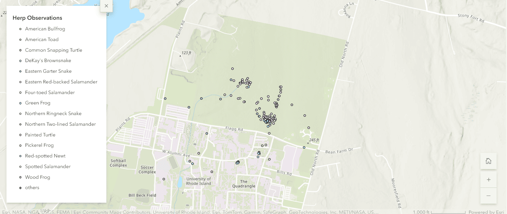

North Woods Project:
Mobilizing Digital Field Methods
and Art-Based Research
for Science Communication
and Environmental Advocacy


Mobilizing Digital Field Methods
and Art-Based Research
for Science Communication
and Environmental Advocacy
This webtext documents an emerging series of digital interventions and exhibits situated with/in the North Woods, an approximately 300-acre parcel of unmanaged forests and wetlands on the northern part of the University of Rhode Island’s campus. North Woods Project (or NWP) is an evolving, open-access digital resource developed by the DWELL Lab at URI that combines augmented reality (AR), web development, and digital mapping (GIS) with hands-on experiential learning, rhetorical field methods, and creative-critical approaches to science and environmental storytelling. NWP brings together artistic and scientific perspectives through a rotating series of interactive interventions, including walking tours, trash cleanups, ecological data collection, art and poetry workshops, and digital storytelling.
As part of our ongoing work, the team participated in the 2024 North Woods BioBlitz, leading workshops on different approaches to taking field notes, artistic practices like texture rubbings, and the relationship between creative writing and natural science. We also released the first series of Points of Interest (or POIs) on our digital walking tour, using a combination of GIS and AR to provide participants with both locative and remote options to interact with our content.

Figure 1.1: The DWELL Lab team gathers together with students from the North Woods Conservation and Hiking Club and other attendees at the annual BioBlitz in Spring 2024 to showcase work, lead workshops on place-based writing and art, and to participate in data collection.
At the same time, we hope to demonstrate more broadly how digital technologies and creative methods can come together to foster different forms of remote access to field-based experiences, extending the North Woods beyond their physical borders and opening them up to new audiences and participants. These methods provide important opportunities for researchers to contribute to more accessible experiences in a wide range of contexts, which members of our team discuss at greater length in a separate study (Heilig, et al., 2024). The theories and methods we discuss could be similarly applied to a wide range of contexts beyond a “natural” site, including other parts of campus or in the wider community.
TopNWP takes a field-based approach to pedagogy that uses augmented reality and other mobile technologies to bridge the gap between the sciences and humanities in order to foster more engaging digital and analog experiences with place. Students and educators collaborate to practice rhetorical field methods and art-based research, using multimodal tools and deep-mapping techniques to encourage participatory methods through entertaining and engaging exhibitions. Emerging science communication techniques require an exploration of spatial rhetoric and digital literacy that foster inclusive locations of equitable knowledge sharing and development. The NWP explores existing practices and concepts that have been examined as a means to evolve these communication models.
In this project we engage with what Gregory L. Ulmer terms electracy, which can be described as the apparatus shift characterized by the transition from print to electronic media, with broad implications for culture and society (Ulmer, 2003). As the fractured response to the COVID-19 pandemic has laid bare, traditional approaches to science and environmental communication are not well equipped to address the large-scale social and environmental challenges we face. Instead, NWP applies an electrate model for science communication by implementing digital and rhetorical field methods in artistic installations which are designed as entertainment-based forms of science communication, inspired by Ulmer’s longstanding collaboration with the Florida Research Ensemble composed of artists and theorists (Ulmer et al., 2022). Electracy reveals the importance of entertainment as a form of communication in any capacity (Markelj, et al., 2023). With complex, multi-genre content, creating projects that engage users opens up new ways of sharing information and knowledge that has historically been regarded as inaccessible or irrelevant. Our approach blends together creative and critical modes with artistic and scientific perspectives for environmental storytelling. In doing so, we extend Ulmer’s creative-critical writing practices (1985) and his engagements with post-criticism, art, and creativity (1983). In many ways, our approach to NWP as an emerging platform for storytelling is based on his work with collage/montage that seeks to make and compose rather than critique.
Introducing rhetorical perspectives to field methods and participatory research is a way to challenge current practices and assumptions about ethics and rhetorical research. Some of the key ethics examined through rhetorical field methods regard text, context, the critic, the rhetor and audiences (Chevrette et. al., 2023). The goal is to explore different pedagogical approaches which foster new perspectives and anti-colonial methods. NWP implements this methodology by using participatory perspectives to examine topics such as environmental science, ethnography, history and literature. One way to accomplish this is through using art as a means to convey different topics and reveal knowledge. Digital field methods are implemented as a way to create digital media and artwork which can shape collaborative fieldwork and create “spaces for a wider number of voices and stories” and “intervene in unsustainable and unjust patterns” (McGreavy, 2023). Creating an exhibition of these artifacts is a method of research which encourages creative expression and inquiry into new or existing concepts.
This methodology combines existing concepts of art-based research (ABR) and exhibition-based research (EBR). The purpose of art-based research is to explore the connective tissue between visual art and writing. Kristin LaFollette explores the concept of ‘transgenre composing,’ or the intersecting of visual art and writing” (LaFollette, 2022). She believes that transgenre composing can encourage a pedagogical system where embodiment of ideas is celebrated and can create a more tangible feeling to learning and education (LaFollette, 2022). Similarly, EBR is a way to distill complex research concepts by curating multimodal research artifacts into an exhibition-styled format (Eccles et. al., 2024). The authors explain that this “approach creates a dynamic engagement between the public, academia, and creatives, increasing the relevancy of findings across audiences and advancing public understandings” (Eccles et. al., 2024). NWP extends work in ABR/EBR to create a distinctive style of learning that is accessible to large communities beyond the primary audience for its topic. It is an example of rhetorical field methods by challenging the streamlined learning models that can be restrictive and discourage creative processes.
The digital and analog artifacts developed by the NWP accumulate to a landscape of public memory and meaning-making in the form of a multi-layered mesh of deep-mapping techniques. Using location-based technologies, deep-mapping shapes our approach to digital-field methods by sustaining a growing collection of artifacts specifically tied to places. Through this method we can practice critical cartography by including participatory design, which expands upon new and existing narratives about space and place from a diverse range of perspectives and knowledge. April O’Brien offers a similar method/ology in her work with countermapping (O’Brien, 2024) based on Ulmer’s work with electrate choragraphy (O’Brien, 2020). As such, we build from this work to demonstrate how methods from critical cartography can be used for pedagogy in concert with digital environmental communication projects to richly layer information and deepen engagement with places.
Deep mapping is an important method that informs our approach to digital field methods using location-based technologies. As a method for critical cartography, deep mapping combines a diverse range of perspectives, histories, knowledges, and experiences in order to create meaningful narratives about a place. This project extends previous work that applied deep mapping techniques to environmental storytelling (Butts and Jones, 2021). Through practices like bodystorming (Milligan, N.D.), localization (Jones, N.D.) and participatory design (Weaver, 2022), we demonstrate how designers can use spatial techniques to craft compelling stories about places and to make connections with the communities, histories, and cultures that compose them. Using creative and place-based methods in concert with locative media allows designers to engage communities in participatory projects on pressing social and environmental issues, creating platforms for active participation in spatial storytelling.
TopAnnaFaith Jorgensen
On April 27 and 28, 2024, the second annual BioBlitz took place in the North Woods on the University of Rhode Island campus. To open the weekend, I led a workshop about field notes. Often used in ecological science, ethnographic research, and narrative writing, field notes are a practice that varies from formal to freeform, depending on the style and goals of each individual.
Learning to take field notes is a process of study, participation, and exploration. When I lead field notes workshops, I come from a place of reflection and invitation. I typically share examples of my field notes and journals that showcase different methods and approaches. I find that passing around the physical copies has an effect of immersion, encouraging participants to engage deeper with the stories I share. While sharing these pieces of my past, I encourage participants to view field notes as a piece of personal history, a “gift to their future selves”, rather than a burden of documentation.

Figure 3.1: Students from the North Woods Conservation and Hiking Club, as well as the DWELL Lab Team, participate in a place-based field notes workshop led by AnnaFaith Jorgensen. Photo courtesy of Madison Jones.
“Field notes are a practice of oscillating between being present in place and recording your surroundings.” —Madison Jones
For the North Woods BioBlitz, I brought several examples from my undergraduate studies, as well as my notebook for the North Woods. Each set is different, depending on the nature of the project. For a field crew in the Hassayampa River Wilderness, my goal was recording the progress and methods of riparian restoration on the Hassayampa River. My set of Grinnellian journals has detailed records of natural history and ecology from different islands in the Gulf of California and mainland Sonora, Mexico, from a semester at the Prescott College Kino Bay Field Station. My North Woods notes contain jottings of different visits with professors, classmates, and solo explorations, wandering and generating ideas.
There are times when rigid, formal notes are useful, such as with Grinnellian Journaling. In the Grinnellian tradition, there are strict guidelines for formatting and contents of field journals. The main components are a field notebook, used for quick jottings; a journal of narrative transcriptions that expands on said jottings; and species accounts. Grinnellian field notes are formalized in a way that makes them a powerful piece of scientific recording in the ecological sciences.

Figure 3.2: Small notebooks are used to quickly write “field jottings”, which can later be transcribed to longer narrative journals. Photo courtesy of AnnaFaith Jorgensen.
Ethnographic field notes are used for researchers to understand and analyze the nuances of social interactions and situations. Kelly E. Tenzek (2017) writes “it is imperative for the researcher to pay attention to the physical space, location, people, interactions, and what is not being said”. Tenzek also discusses differences between descriptive and reflective field notes, writing that descriptive notes “can be thought of as the tangible, physical, objective interpretation of what was going on”, while “reflective field notes are more subjective in nature and create the space for the ethnographer to tap into [their] own personal interpretation of the observations”. In my experience, these approaches are best used in harmony together.
In both ethnography and ecology, field notes have the potential to add richness and depth to observations, or serve as standalone data. Both traditions recommend transcribing and expanding notes into longer journals after the field visit. This allows the writer to strengthen the entries with qualitative information, clarifying and organizing them into a succinct recollection of the day. It can also be a place of reflection, and adding probing questions.
Field notes themselves are interdisciplinary. As part of American scientific traditions, they have long participated in the connections between arts and science, dating back to the combined field notes, illustrations, and deep mapping practices of William Bartram and before (Butts and Jones, 2021; Sivils, 2004).
Figure 3.3: William Bartam was known for his detailed natural history illustrations, produced during the 18th Century. This watercolor illustration by Bartram depicts an American lotus seed pod, a water snake eating a frog, a snail, a hummingbird, a dragonfly, pickerel weed, and arrowleaf, courtesy of Auburn University Libraries.
There are many pieces of influential writing, as well as lesser-known works, that draw on field notes or consist directly of field journals. Natural history has been crafted by field notes which influence our understanding of modern science. Florence R. Krall (1994) was one of the first contemporary writers to use field notes to blend scholarship and creative writing in her book Ecotone: Wayfaring on the Margins. Her groundbreaking work is an inspiration not only to this project but to many in the environmental writing tradition, including her student Terry Tempest Williams. In Finding Beauty in a Broken World, Williams (2008) included almost 200 pages of field notes about prairie dog observations, interspersed with anecdotes from personal and natural histories. In both works, field notes serve as both scientific record and personal inspiration.
Sometimes, adherence to strict traditions can be intimidating. I place emphasis on personal methodology, “finding your (field) voice”, and using tools that craft an enjoyable and meaningful practice. On the day of the workshop, we distributed small, pocket-size notebooks and pencils with erasers, but also discussed how digital field notes can be extremely effective, either standalone or complementary with written field notes. Photos, video, voice memos, voice to text, and typing are ways to make field notes more dynamic and appealing.
Figure 3.4: The notebooks we distributed were used for written notes, as well as sketches and rubbings during the art workshop later in the day. Photo courtesy of AnnaFaith Jorgensen.
We encouraged participants to gather inspiration for the Renga poetry workshop later in the day, as well as their scientific observations for the BioBlitz. Through a combination of scientific and creative activities, students were able to immerse themselves in the North Woods and explore the ways in which field notes have the potential to deepen engagement with, and immersion in, our university forest.
TopAshley Katusa
A radiating sun hangs in the midday sky, warming skin and scales alike. I am out for a brief walk along some North Woods edge habitat, with the objective of “counting snakes.” I am listening for rustling leaves among birds’ sweet cries, scanning the grass and detritus for a glimpse of a tail escaping this blundering giant. During a 25-minute walk, I counted 10 individual snakes. While this informal experience could not tell me specific characteristic data, like how old these snakes might have been, their genders, or the physical condition of each, those were not my goals for this outing – I was able to observe the presence of snakes – and two different species!
Out-of-classroom or informal learning experiences reduce some of the pressure and rigidity of traditional academia. We find that there are other ways to learn about a garter snake (Figure 4.1), for example, than by observation of a wet specimen in the lab, or by yanking a defensive snake out of the leaf litter and passing him around to 30 people. Informal learning experiences and the use of creative mediums like mapping and videography offer a unique opportunity to engage interested community members and also discuss the ethics behind herping, which can be missed in the classroom or lab.
Figure 4.1: This little Eastern garter snake (Thamnophis sirtalis sirtalis) was found in some edge habitat along the North Woods. He seems to be utilizing the “if I stay still, I’m invisible!” technique to avoid interacting with me.
From the ancient greek ἑρπετόν, or herpetón, meaning “creeping animal”, the term “herp” or “herps” is an informal way of referring to amphibians and reptiles. “Herping” (looking for amphibians and reptiles) alone or with a group, organized surveys like BioBlitzs, and taxa-specific community data collection projects are examples of ways we can engage with amphibians and reptiles in a more holistic (and mutually beneficial) way than in traditional classrooms. “Ethical herping" involves being keenly aware of your surroundings and not damaging habitat, avoiding handling organisms, and ensuring things are left exactly as you found them.
Amphibians and reptiles are at risk from disease, habitat loss and fragmentation, and human conflicts (for example: turtles being stolen from the wild for the pet trade, or snakes being killed for human comfort), among other things. These species are also generally understudied and undervalued compared to charismatic megafauna like elephants and panda bears, which are commonly portrayed as “econs” indicative of some underlying cause or feeling, or “ecotypes” (Morey, 2009). More often than not, ecotypes are categorically “good animals” (Morey, 2009) like these charismatic megafauna; few advocate as intensely for snapping turtles or rattlesnakes. Even when amphibian and reptile-focused community science projects exist, they are less likely to be “taken up” by scientists and reflected in the literature than projects for mammals or birds (Binley et al., 2023). We imply that an observation survey is only “proper” when it has a researcher with accolades, funding, and impacts “running the show” by failing to engage with this data. It is imperative that we pick up the scattered pieces to not only close fundamental research gaps and improve our conservation efforts of these imperiled species, but also consider alternative methods of knowledge and “knowing” and strengthen how we engage reciprocally with the community.
This project was initially inspired by a desire to reflect on, and improve, our relationships with snakes, and encourage scientists to consider how to engage with communities more reciprocally and productively. Snakes are arguably disproportionately susceptible to human-wildlife conflicts, reflected through the resounding comments of “nope rope!” and “get the shovel!” when an image of a snake is shared online (Figure 4.2) (which has sparked memes criticizing this mentality, Figure 4.3). Snakes are entrenched in our daily lives – in our culture, and our environment. More broadly, amphibians and reptiles are, as well – look to the Florida “Gators,” Teenage Mutant Ninja Turtles, or Alex Jones’ fascination with frogs – indicating a need to broaden the scope of this project to include all herp species we might find in the woods.

Figure 4.2: Two comments from two different individuals in a local Facebook group. These comments were made on two different posts asking for identification of snakes in Rhode Island. Comments like this risk confirming people’s fears or dissuading their curiosity.

Figure 4.3: A more positive representation of interacting with snakes, criticizing the “kill it with a shovel” adage sometimes seen online.
Ultimately, the “Herps of the North Wood'' project considers herpetology in the North Woods and University of Rhode Island campus, with discussion on ethical handling (or lack of handling), some uses of videography in herpetology, and the critical opportunity for community engagement. The project is currently visualized in an ArcGIS StoryMap in order to include a prototype habitat map. The habitat map was inspired by a desire to increase the accessibility of herping. Amphibians and reptiles can be hard to find and going herping without a plan can be overwhelming. Mapping and otherwise visualizing potential “herp habitat" (Figure 4.4) can both encourage active participation and offer a way for people who cannot physically visit to come herping in the North Woods.

Figure 4.4: Screenshot of a prototype herp habitat map. This map identifies three types of herp habitat: edge habitat (3), stone walls (2), and vernal pools (1).
I created an iNaturalist project (“Herps of the North Woods”) with observations filtered to Amphibia and Reptilia and geolocated at the University of Rhode Island (URI), to see how the university community is using this application to engage with amphibians and reptiles. iNaturalist is a free data-sharing platform. Social features of the platform can facilitate engagement with observers, which is additionally recommended in iNaturalist project documentation. The URI community has observed 145 individuals of 15 species (Figure 4.5, Figure 4.6); approximately 37% of the 41 herp species found in the state of Rhode Island have been found in the North Woods or on campus. Almost half (n=73) of these observations came from a single event: the first annual North Woods BioBlitz Herp Identification (thanks to a group of herpetology students willing to flip some logs early on a chilly weekend morning).
Figure 4.5: Screenshot of amphibian and reptile observations in the North Woods and on the University of Rhode Island campus. Although most observations are made in the woods, community members still find herps around campus. One observer found a snapping turtle (Chelydra serpentina) hatchling near student housing.
Figure 4.6: Count of amphibian and reptile observation by species. The red-backed salamander (Plethodon cinereus) is the most observed species.
Two recent events brought a group of people interested in herps together in the woods: the Second Annual BioBlitz Herp Identification (Figure 4.7), and the first North Woods Vernal Pool Night Walk (Figure 4.8). It was several people’s first time “herping”, but regardless of experience everyone brought their unique perspectives and knowledge together in the woods to make for engaging and exciting events. We observed tadpoles and bullfrogs at the Vernal Pool Night Walk and learned about different types of herp habitat during the BioBlitz. The true engagement from these events came from the lack of formality. Although the events were facilitated by “experts,” the events did not hold the same dynamic that a formal classroom setting typically does (where the “expert” is “doling out” their “sacred knowledge” to the “ignorant or uniformed”). Rather, there was a resounding sense of curiosity-fueled discovery throughout these events, sparked by participants (and facilitators!) having agency to wander and explore, essentially “choosing their own adventures” then coming together to share in learning.
Figure 4.7: Attendees at the second annual North Woods BioBlitz Herp Identification flipping logs in search of snakes and salamanders.
Figure 4.8: Attendees at the first North Woods Vernal Pool Night Walk. This bullfrog (Lithobates catesbeianus) had plenty of admirers.
Although identifying the species and their relative abundances in a given area are important considerations in conservation and land management decisions, the primary objective of this project is ultimately to provide an opportunity for people to engage with species they may be curious about, or even fearful of. Too often, the first opportunity we have to learn about a snake is when it is defensively coiled in our backyards and perceived as an immediate threat to us, our children, and our pets. Providing a multimodal, taxa-specific project caters to a range of audiences with various comfortability and familiarity levels. For example, someone fearful of a snake may opt to take a virtual “walk” through snake habitat without having to encounter any snakes, and someone curious about salamanders might watch an egg sac develop in a vernal pool through the lens of a GoPro (Figure 4.9).
Figure 4.9: A developing spotted salamander (Ambystoma maculatum) egg mass in the vernal pool. Note the tadpole that looks like it is resting on the egg mass; this is a wood frog (Lithobates sylvaticus) tadpole trying to eat the eggs! Wood frogs and spotted salamanders breed around the same time (after the first warm spring rains), but wood frogs hatch earlier than spotted salamanders. The spotted salamander egg mass has a gelatinous outer coating that acts as protection against wood frog tadpole predation (this also helps distinguish spotted salamander eggs from wood frog eggs, which lack this outer coating).
This project also encourages “hands-off” approaches through its considerations of ethical herping: amphibians have semi-permeable skin and are thus susceptible to pollutants from our hands, and there is little need to pass a clearly-fearful snake around to a large group when we can learn the same things about him through quiet observation. Information on ethical herping (Figure 4.10) can be virtually posted in sensitive herp habitat (such as the vernal pool) to suggest these alternative handling methods to visitors to the woods.
Figure 4.10: Screenshot of an ethical herping handout was shared with participants at the Vernal Pool Night Walk and BioBlitz Herp Identification. This sheet gives background information on amphibians and how to keep them safe while herping. We also provided a bleach solution for willing attendees to clean their gear after leaving the wetlands.
Through considerations of ethical herping, we can also begin to “demystify” behaviors we may be fearful of. Our fear of snakes is complex and nuanced, with regional and cultural experiences shaping the rhetoric around these animals, and this rhetoric can begin to be reframed through observation in the snake’s natural habitat. A snake might not seem so mystical and imposing when you see that many snakes we find in the North Woods are the size of a leaf or small twig, virtually invisible among the detritus. A snake doesn't strike because he is mean, rather, he strikes because someone has, metaphorically, broken into his home and posed an immediate threat. A strike might not seem so dangerous when you realize the snake was only "bluffing", asking you firmly to "get lost.” And if we find a snake exhibiting these characteristically defensive behaviors (Figure 4.11), we can better contextualize it instead of instigating it.
Figure 4.11: Eastern garter snake (Thamnophis sirtalis sirtalis) exhibiting a defensive posture. I can tell that he's an Eastern garter snake because of his checkerboard pattern. In the video, I am explaining that the snake isn’t being mean or trying to bite me by being defensive - he just doesn’t want to be eaten by the scary thing that is hundreds of times his size. This snake probably felt like he didn't have a good "escape route" from the GoPro shoved in his face (note his tail wrapped around a grass stem - he was holding on for his life), so he decided to strike twice. Note that neither strike made contact - he was truly just asking me to "get lost!". Snake-human conflict is easily avoided.
Future directions of the project can include sharing labeled identification photos (Figure 4.12), infographics and species fact sheets with project contributors, expanding habitat maps and adding NFC-based habitat information, and setting up photography “checkpoints” at temporary wetlands and other areas of interest.

Figure 4.12: Photograph of a green frog (Lithobates clamitans) with key identifiers highlighted. The green frog has “dorsolateral ridges” (raised lines that go down the frog’s back) - this helps distinguish them from the similar-looking bullfrog (Lithobates catesbeianus) who lacks these ridges. The “tympanic membrane” (essentially an eardrum) helps distinguish male frogs from females; the tympanic membrane is larger in males. A good point of reference is checking if the tympanic membrane is larger than the frog’s eye - if yes, it’s probably a male! The tympanic membrane technique is reliable for both green frogs and bullfrogs. .
Regardless of method, the underlying objectives of being together in the woods (either physically or “virtually” via iNaturalist communities, virtual habitat walkthroughs, or other media), bringing together unique perspectives and knowledge to spark curiosity, and engaging reciprocally with community-sourced data are central to this project. In doing so, we can also begin to reconsider and reshape some of the negative rhetoric surrounding these imperiled species.
TopTravess Smalley
In the fall of 2023, I integrated the North Woods into my Print Media Studio course at the University of Rhode Island. The aim was simple: to utilize nature as an additional classroom space for artistic exploration.
During the second class, I led students on a walk through the North Woods. Equipped with hiking boots, cameras, and sketchbooks, we walked the length of the North Woods trail from east to west. Without detailed instructions, students observed and emulated my actions—collecting leaves, making rubbings of bark textures, and making contour line drawings of branch growth. My documentation and actions served as a reflective mirror, capturing and echoing the intricate natural patterns we observed through the environment.
Figure 5.1: Figure: Leaf rubbing on mulberry paper.
I recall hushed moments of observation punctuated by bursts of excitement as students discovered vibrant mushrooms or craned their necks to identify the source of a bird's song. As we walked the woodland trails, discussions flowed freely, touching on topics ranging from the stillness of the forest to color theory and creating natural dyes. It was evident that the North Woods had sparked a sense of curiosity among the students.

Figure 5.2: Shows the cyanotype process, pulling away plant clippings to see the form.
Back in the studio, I introduced monotype printmaking techniques, using our experiences in the North Woods as inspiration for assignments. Students translated their observations into experimentations with the printing press and photocopier, infusing their work with drawings, rubbings, shapes, and plant clippings from the natural world.

Figure 5.3: Prepping Monotype on the Press. Clippings from the hike are laid on top of an inked plexiglass plate to run through the etching press.
The North Woods provided a rich source of inspiration for formal and conceptual ideation and observation. Inspired by Friedensreich Hundertwasser's philosophy of learning from nature, I aimed to create an environment where students could observe the natural world near them and to see, understand, and utilize the beauty and elegance of natural forms for their art practice.
Integrating the North Woods into our curriculum expanded students' understanding of art and nature, illuminating the presence of chance, entropy, and emergence in the forest's natural systems as they continuously evolve. Throughout the month of September, students returned to the woods, inspired by artworks like "According to the Laws of Chance" by Jean Arp, and equipped with an understanding of utilizing chance and randomness in art. Drawing parallels with the natural phenomena observed in the woods, they adopted a new perspective, viewing the woods and forest floor as dynamic compositions of leaves (shapes) and roots (lines). Using their cameras as tools for capturing these serendipitous moments, students synthesized their observations through their artwork, showcasing the profound connection between art and the environment.

Figure 5.4: Gabrielle Antonelli, untitled, 2023, xerography.

Figure 5.5: Jane Malyuta, untitled, 2023, cyanotype and xerography.

Figure 5.6: Ellie Witkun, untitled, 2023, cyanotype and monotype on fabric.

Figure 5.7: Jane Malyuta, untitled (monotype), 2023, ink on paper.

Figure 5.8: Michael Miller-Sprafke, The Green Man, 2023, monotype and xerography print on paper, 11 x 8.5 in.
Our experiences in the North Woods challenged the traditional notion that an artist's studio must be a confined indoor space, encouraging students to find inspiration in natural forms and to view the woods as a place for contemplation and artistic exploration. By integrating the natural environment into their art practice, students were able to discover and capture forms that deepened their understanding of the interplay between art and nature.
TopAlly Overbay
Interested in ABR and specifically how fiber arts and quilting are, as what LaFollette calls, “transgenre composing,” I created a quilt map of the university’s North Woods. Further inspired by the flora and fauna of New England (which were unfamiliar to me prior to this project) and layering cartographic literacies (Heilig et al., 2024), I created a quilt that not only represents an aerial view of the plant trails and plant communities in the woods, but is also created from the plants of the North Woods via natural dyes. Each piece of the quilt symbolizes, much like a map legend, a component of the woods. Sometimes that component is simply a plant community (a yellow square for the goldenrod field) and other times it’s based on personal experience (the brown and yellow grid representing the filtering of light through an opening in the North Woods canopy). In this way, the quilt map moves beyond traditional cartography in which one color or texture represents a place, challenging the idea that maps are solely navigational; instead, the quilt map is a meaning-making device, an interrogation of the divide between science and humanities.
Quilting itself is an act of piecing things together; it’s nearly impossible to visualize the whole image until its fragments are seamed together. Dyeing plants is even more unpredictable, with an almost infinite number of variables that could change the color: the type of fabric, the chemical mordant, the temperature of the water, the amount of rain that plant received last spring. Creating this quilt with natural dyes was to learn about the plant species of the North Woods without expectation—no amount of planning could dictate its final colors. But creating this quilt map was as much an act of personal expression as it was a piece of environmental communication. As Bost writes in her dissertation “Quilts as Visual Texts,” a quilt “can indeed be a text: one that shares the ambiguity and techniques of other visual texts, one that performs tasks like written texts, and one that affords the quilter an opportunity to compose an embodied text” (Bost, 2010, 117). The back of the quilt embodies such rhetorical elements by including three squares created by other visitors of the North Woods. Each one tells its own story about the North Woods, created using the collaborator’s respective fiber art—crochet, knitting, and embroidery.
These squares are placed directly “behind” (on the backside of the quilt) the place in the North Woods that most inspired them. Incorporating these squares by other North Woods visitors is in many ways an act of countermapping the North Woods, which O’Brien describes as the practice of “resist[ing] dominant spatial narratives,” (O’Brien, 2024, 130). By creating a map that is untraditional in its symbology and its very form (a quilt), it also aims to redefine public memory and challenge our understanding of place, re-determining who makes the connections between places and experiences/memories in the North Woods.
Other than those three squares, the back of the quilt is plain, white cotton. This is what the quilt would look like without the colors from natural dyes, representing my personal understanding of the North Woods before hiking its trails and learning about its plant species. Each side of the quilt is therefore a shift in personal perspective—flip it over and the colors change, but the place does not.
.I pieced the quilt together as an aerial view of the North Woods, with each parcel on the map corresponding to (and dyed using) the trees and plants from those areas. The North Woods trails and waters—the blue, yellow, and white trails, as well as the pond and vernal pool—are dyed with kitchen foods. This represents the “infrastructure” or human-caused phenomena in the woods; the vernal pool is believed to be an old cattle trough and the pond sits atop a remediated superfund site. For these blue and gold colors, I used black beans and onion skins.

Figure 6.1: From left to right: Field notebook of natural dyestuffs and their color- and light-fastness. Dyed fabric using walnuts. Pot of daffodil dye with fabric.
In the spring of 2023, I collected goldenrod—which I learned grows in weed-like swaths along roads and fields—and took some of it home to find that it yields a butter yellow on fabric. In the fall, I stored acorns and walnuts in my freezer, and in the winter, I collected fallen bits of lichen and bark from the ground. In the spring, I watched the daffodils bloom and then waited for them to wilt, needing only seven browned flowers to dye fabric a vibrant yellow. I collected pinecones and stamped them with walnut-ink onto white linen. I checked out library books about dye-and-resist methods and tried it out with acorn dye. I learned how to identify the trees and plants that comprised the North Woods, and how to pretreat fabric and take detailed notes about the dye process. I watched the fabric change color inside jars and pots, as did my understanding of the North Woods.

Figure 6.2: Front side of North Woods quilt map.

Figure 6.3: From right to left: Crochet square by Callum Lewis, placed behind the vernal pool. Embroidered square by AnnaFaith Jorgensen, placed behind the intersection of the blue and white trails. Knitted square of sweetbriar by Lauren Ramos, placed behind the white trail.

Figure 6.4: Back side of North Woods quilt map.
TopErin Edmonds

Figure 7.1: A tradtional StoryWalk using printed signs with text and visuals.
Background: In the spring of 2023, I experienced my first StoryWalk® alongside my seven-year-old daughter. A storywalk is an innovative way of combining literacy with outdoor exercise and exploration. As participants walk along a prescribed path, they encounter each page of the story in sequence, creating an immersive reading experience. The first trademarked StoryWalk® was created in 2007 by Anne Ferguson of Montpelier, VT, in collaboration with former staff member Rachel Senecha (www.kellogghubbard.org/storywalk). A simple and impactful concept to be sure, and not without historical roots. Memory palaces, also known as the method of loci, have been used since ancient times as a mnemonic device. In a memory palace, you mentally navigate through a familiar physical space, such as a house or a street, associating each location with a piece of information you want to remember. By creating vivid and memorable associations between the locations and the information, you can easily recall it later by retracing your mental steps through the palace. Storywalks incorporate a similar principle but in a more dynamic and immersive way. Instead of relying solely on static locations, storywalks involve physically walking through a real environment while experiencing a narrative unfold. In the city of Tucson, the University of Arizona Poetry Center created the Haiku Hike, an urban poetry hike. By combining outdoor activity with poetry, the creators have added a cultural and artistic dimension to the downtown outdoor experience (www.downtowntucson.org/events/haiku-hike). This intertwining of physical activity with literary elements has the potential to deepen appreciation for both nature and culture.
Located in the traditional lands of the Narragansett Nation and the Niantic People, the North Woods are part of rich storytelling traditions and lived experiences. Stories are told to teach, inform, enlighten, and entertain. Storytelling not only connects individuals and communities to their place and time but to each other. Oral traditions are the core of Indigenous knowledge transfer and storytelling is how this information is passed from person to person and one generation to the next. Engaging with these oral traditions, as Soren C. Larsen and Jay T. Johnson Being Together in Place opens students to “learning multiple viewpoints concerning the wetlands” through “place-based multinaturalism” (125). As Joshua Smith puts it, these traditions participate in “the knowledge of many Indigenous peoples [that] forms a crucial part of their relationships between themselves and their land”. (Smith, 2020). Knowing the world begins with place, with our embodied experience of all that place entails, including human and non-human (Larsen and Johnson, 2017, p104). Whereas Indigenous people understand place as an interconnected web of toponyms, the traditional colonial model seeks to order the landscape. In turn, the guardianship of the land needs to be vested not only in how we learn from but teach those with whom we share these places (Larsen and Johnson, 2017). Along these lines, Kristin Arola advocates for a land-based digital design approach for online spaces, connecting “American Indian epistemologies” to “an ethical, relational, and material approach to the design of digital spaces” (199). I began to wonder how we could incorporate such a simple but powerful Storywalk concept into our North Woods in partnership with the Narragansett Nation and its people.
Partnership: Together with the Indigenous Empowerment Center at the Tomaquag Museum, a traditional ecological story was identified. How birds got their song, recounts how the Creator gave native bird species their beautiful songs. He told them to fly as high in the sky, and when they returned to Earth, they would receive their song. Each bird flew as high as they could and received their unique songs in turn. The tiny hermit thrush, nervous about not being able to fly as high as others, jumped onto Great Eagle’s back in the hopes of receiving the prettiest song. But when she returned to Earth, the creator and the other birds knew she gained her song dishonorably. Out of shame for what she had done, today the hermit thrush can only be heard quietly singing in the deepest woods.
Figure 7.2: NEED FIGURE TEXT (DIFFERENT FROM IMAGE ALT TEXT).
Installation: In an effort to keep the experience immersive and limit the number of distractions, the story was recorded using audio only. Four segmented sections of the recording were placed along the North Wood’s main hiking route. NFC chips at designated locations along the route direct the listener to the audio using their mobile device, allowing participants to physically explore the story's setting, immersing them in the narrative in a way that other, more traditional Storywalk formats cannot. By moving through the physical space corresponding to the story's setting, participants feel more connected to the characters, in this case the birds. Instead of passively consuming a story, they become active agents in shaping the narrative through their movements and interactions with the environment. This interactivity fosters a deeper sense of investment and connection to the story.
Considerations: While NFC technology adds a new dimension to storytelling, there are practical challenges and considerations to address. Ensuring accurate NFC tracking, designing walking or hiking routes that are safe and accessible, and integrating technology seamlessly into the storytelling experience are all important factors to consider. In addition, working alongside a local Indigenous group requires a deep respect for their cultural traditions, knowledge, and protocols. This co-creation (Cizek and Uricchio, 2022) ensures that the content accurately reflects their heritage and values. Beyond the initial creation and installation, maintaining and sustaining the stories and their NFC locators requires ongoing collaboration and support from the Narragansett people and the DWELL lab. This may involve regular maintenance of the trail, updates to the storytelling elements, and continued engagement with the community.

Figure 7.3: A student accesses the recording on their mobile device using the NFC chip at each designated POI.
Creating this Storywalk with a local Indigenous group has truly produced something special. We hope that it is just one of many meaningful endeavors that promote cultural understanding, foster community connections, and celebrate Indigenous heritage in a respectful and inclusive manner. It's important to approach this process with humility, openness, and a willingness to learn from the wisdom of the Indigenous community.
TopIn this webtext, we have shared examples of how digital field methods—specifically combining place-based writing, locative media, and creative methods—can create new ways to engage with environments and places. Specifically, we have examined the way that art-based and exhibit-based research and community-engaged work play a central role in the North Woods Project. We find benefit in, and a continuing need for, co-creation (Cizek, K. & Uricchio 2019) in engaging with the North Woods and its community. Cizek and Uricchio (2019) define “co-creation” as offering “alternatives to single-author vision, and involves a constellation of media production methods, frameworks, and feedback systems…projects emerge from a process, and evolve from within communities and with people, rather than for or about them” (2019, emphasis original). Cizek and Uricchio also note that co-creation can “span across and beyond disciplines” and “involve non-human systems” (2019). The North Woods is an inherently non-human system, comprising multiple ecosystem types with varying taxa, is located on the traditional lands of the Narragansett Nation and the Niantic People, and is utilized by a range of individuals spanning University and local communities, all with different interests and priorities. This precludes a “single-author vision” for the woods, and instead indicates the need for continuing co-creation through community-engaged work (Costanza-Chock 2020).
As demonstrated through our various case studies, our work with the North Woods provides visitors an opportunity to re-imagine and re-determine their relationship with the campus woods. By not only permitting but also encouraging creative participation, the North Woods Project contributes to deep mapping practices that promote a richer understanding of place. Combining digital field methods with deep mapping and emerging technologies requires designers to slow down and spend time “bodystorming” in place, fostering relationships between people and place, and being open to wayfaring with the people and places that share in guiding the direction of the work. Additionally, by working in and with the natural environment, we create tangible and meaningful connections between our creative work and the natural world. For example, during our art printing workshop, we directly incorporated and improvised the forms, colors, and textures we encountered in the North Woods into our image-making processes. Likewise, leading a workshop about field notes in the North Woods invited our participants to foster an individual and collective sense of place. Participants kept their own field notes, and they had the opportunity to draw on them in the art and poetry workshops, further driving personal connections between the observational science of natural history and the observational traditions of art and creative forms.Through understanding traditions from art, writing, ecology, and ethnography–in combination with digital and physical note taking– our work weaves the narratives of people, places, and moments in time.
Our experiences with this phase of interventions around NWP have provided us with the following insights:
Emphasizing participatory engagement in our work, we strive to create an inclusive environment where dialogue and contextual understanding are encouraged among diverse participants. Building from such participatory rhetoric and field methods, our work with the North Woods involves a collaborative process of meaning-making in which individuals and places shape one another. Through this project, we investigate the ways in which various field methods (ecology, fiber arts, visual arts, poetry, and audio/visual media) deepen relationships and increase access to our campus forest, the North Woods. As opposed to traditional academic assignments, there are no “wrong” ways to engage these field methods. Instead, exploratory, experience-based community engagement enables students to shape their own learning. For example, encouraging out-of-classroom and informal learning experiences can help foster curiosity, excitement, and new perspectives about the North Woods. Curating multimodal experiences in the North Woods via fiber art, video, printmaking, mapping, storytelling, and field notes exemplifies the rich and layered perspectives of North Woods visitors. Our collaborative and exploratory approach to this work allows for the North Woods and its role on our university campus to evolve over time.
TopArola, K. (2018). A Land-Based Digital Design Rhetoric. In The Routledge Handbook of Digital Writing and Rhetoric, Jonathan Alexander, Jacqueline Rhodes (eds.), Routledge.
Binley, Allison., and Bennett, Joseph (2023). The data double standard. Methods in Ecology and Evolution, 2(4). https://doi.org/10.1111/2041-210X.14110
Bost, Marcia I. (2010). Quilts as Visual Texts. Kennesaw State University Dissertations, Theses and Capstone Projects. Paper 418.
Butts, S. and Jones, M. (2021). Deep mapping for environmental communication design. Communication Design Quarterly, 9(1) (March 2021), 4–19. https://doi.org/10.1145/3437000.3437001
Chevrette, R., Hanchey, J., Lechuga, M., Hess, A., & Middleton, M. (2023, August 23). Rhetorical Field Methods/Rhetorical Ethnography. Oxford Research Encyclopedia of Communication. Retrieved 14 May. 2024, from https://oxfordre.com/communication/view/10.1093/acrefore/9780190228613.001.0001/acrefore-9780190228613-e-1378.
Cizek, K., Uricchio, W., et. al. (2022). Collective Wisdom: Co-Creating Media for Equity and Justice. The MIT Press. https://doi.org/10.7551/mitpress/13394.001.0001
Eccles, K., Herman, L., Moruzzi, C., and Mustaklem, M. (2024). Introducing the Method of Exhibit-Based Research. Communication Design Quarterly, 12(1), https://cdq.sigdoc.org/wp-content/uploads/2024/04/CDQ-12.1.pdf#page=48
Haiku Hike 2024. Google My Maps https://www.google.com/maps/d/viewer?mid=1WO0HBJgUHan7WteMbM3FWl8kHOX9wJ0. Accessed 15 May 2024
Heilig, L., Jones, M., Overbay, A., Roberts, T. (2024). Augmenting for Accessible Environments: Layering Deep Mapping, Deep Accessibility, and Community Literacy. Communication Design Quarterly , 12(2). [In Press, Forthcoming July 2024].
Krall, Florence R. (1994). Ecotone: Wayfaring on the margins. State University of New York Press.
LaFollette, Kristin. (2022, December 30). Exploring Embodiment Through Rhetoric of Health and Medicine: An Arts-Based, Transgenre Pedagogy. Across the Disciplines, 19(3/4), 180-197. https://doi.org/10.37514/ATD-J.2022.19.3-4.02
Larsen, S. C., & Johnson, J. T. (2017). Being Together in Place: Indigenous Coexistence in a More Than Human World. University of Minnesota Press. https://doi.org/10.5749/j.ctt1pwt81r
Markelj, J., & Sundvall, S. (2023). Theming electracy: An interview with Gregory L. Ulmer. Convergence, 29(1), 11-27. https://doi.org/10.1177/13548565231155078
McGreavy, B. (2024). Tides, Touch, and Care in Collaborative Fieldwork. Environmental Communication, 18(1–2), 126–131. https://doi.org/10.1080/17524032.2023.2296834
Morey, Sean, and Dobrin, Sidney (eds). (2009). Ecosee: Image, Rhetoric, Nature. State University of New York Press.
O’Brien, April. (2024). Shifting Method/ologies: My Journey with Countermapping. Holmes, A. J., & Hurley, E. V. (Eds.). Learning from the Mess: Method/ological Praxis in Rhetoric and Writing Studies , 125-145, The WAC Clearinghouse; University Press of Colorado, https://doi.org/10.37514/PER-B.2024.2180
—. (2020). “Mapping and/as Remembering: Chora/graphy as a Critical Spatial Method-Methodology.” Enculturation, 31, http://enculturation.net/mapping_as/and_remembering
Rand, H. (1991). Hundertwasser (pp. 85-88). Köln: Benedikt Taschen Verlag.
Sivils, M.W. (2004). William Bartram's Travels and the Rhetoric of Ecological Communities. ISLE: Interdisciplinary Studies in Literature and Environment , 11(1), 57–70, https://doi.org/10.1093/isle/11.1.57
Smith, Joshua. (2020). The Moving Boundaries of Bears Ears: Ecological Rhetorics and the Shrinking of a Monument. Rhetoric Society Quarterly , 50(5),352-367, DOI: 10.1080/02773945.2020.1813323
StoryWalk: Kellogg-Hubbard Library. K-H Library https://www.kellogghubbard.org/storywalk. Accessed 15 May 2024
Tenzek, Kelly E. (2017). Field notes. In Mike Allen (Ed.), The SAGE encyclopedia of communication research methods (pp. 564–566). https://doi.org/10.4135/9781483381411
Tempest Williams, Terry. (2008). Finding beauty in a broken world. Vintage Books.
Ulmer, G. L. (2023). Miami Virtue: Choragraphy of the Virtual City. Brill.
—. (1985). Applied Grammatology: Post(e)-pedagogy from Jacques Derrida to Joseph Beuys. Johns Hopkins UP.
—. (1983).“The Object of Post-Criticism.” In Anti-Aesthetic: Essays on Postmodern Culture Hal Foster (ed.), 83-110, Bay Press.
Weaver, I. (2022). Participatory Design. In Tham, Jason C. K. (Ed.). Keywords in Design Thinking: A Lexical Primer for Technical Communicators & Designers. The WAC Clearinghouse; University Press of Colorado. https://doi.org/10.37514/TPC-B.2022.1725
Top© 2024. Developed by the DWELL Lab at the University of Rhode Island. Funding for the North Woods Project was provided by the North Woods Stewardship Council at the University of Rhode Island and a CAREERS Cyberteam NSF Grant (no: FL6GV84CKN57). The authors acknowledge use of the resources of the URI Center for Computational Research and the Massachusetts Green HPC Center for this work. Any views, findings, conclusions, or recommendations expressed in this webtext do not necessarily represent those of our sponsors.
CRediT Author Statement
Madison Jones:[1][2][3] Conceptualization, Methodology, Software, Investigation, Resources, Data Curation, Writing (Drafting, Editing, and Revising), Visualization, Supervision, Project administration, Funding acquisition; Ally Overbay:[2][3] Investigation, Writing (Drafting, Editing, and Revising), Visualization; Joseph Ahart:[2][3] Investigation, Writing (Drafting, Editing, and Revising), Visualization;AnnaFaith Jorgensen:[2][3] Investigation, Writing (Drafting, Editing, and Revising), Visualization; Ashley Katusa:[2][3] Investigation, Writing (Drafting, Editing, and Revising), Visualization; Erin Edmonds:[4] Investigation, Writing (Drafting, Editing, and Revising), Visualization; and Travess Smalley:[5] Investigation, Writing (Drafting, Editing, and Revising), Visualization, Funding acquisition.
[1]Department of Professional & Public Writing;
[2]Department of Natural Resources Science;
[3]Digital Writing Environments, Location, & Localization (DWELL) Lab;
[4]Department of Art & Art History;
[5]College of Pharmacy.